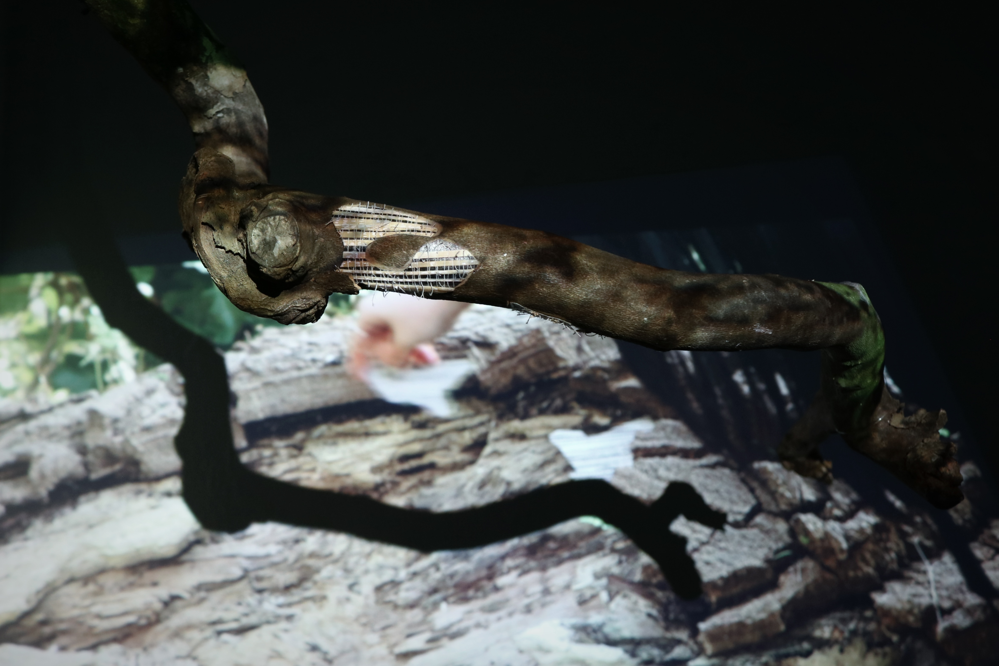
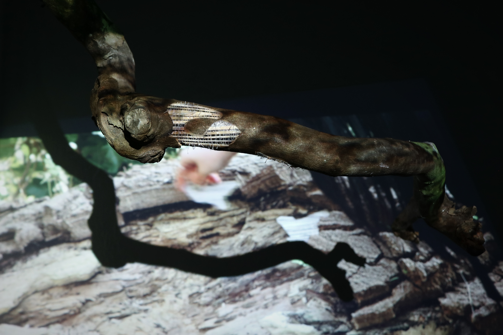
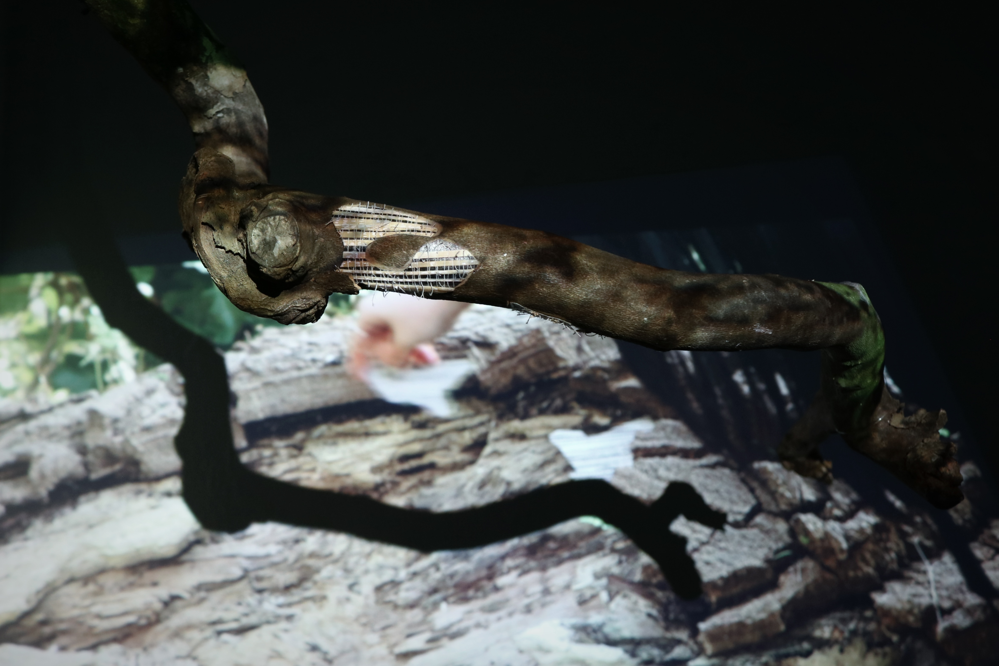

Type: Wallpaper, Video projection
Time: 2025
Description: I embedded the wallpaper into a branch. Its texture and pattern resemble window blinds. A piece of skin, once belonging to a home, follows the grain of the tree bark, seeking to settle. Yet this is a failed grafting. It clings closely to the tree, but seems to be slowly swallowed and compressed by the bark — they are attempting a fragile coexistence. Meanwhile, the shadow of another tree is projected onto it — a recording of my process embedding wallpaper deep within the forest. The tree is devouring the image of the past. Memories etched on its bark are being washed away by time, flickering in and out of presence.
